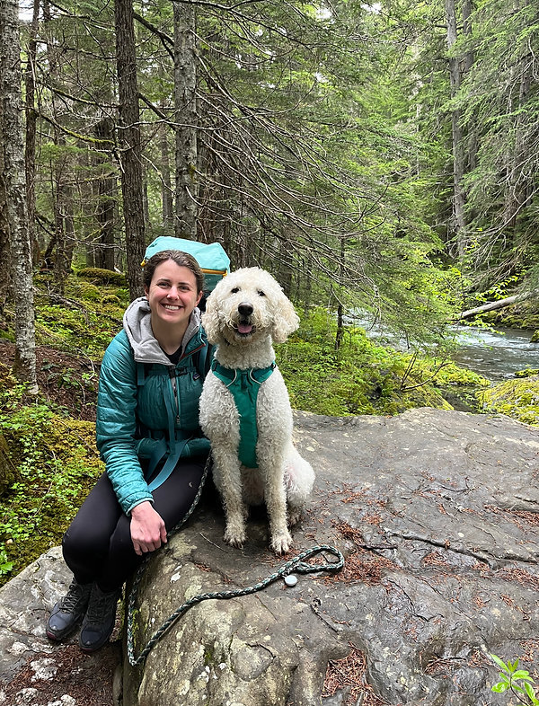

Meet Nicole

- Registered Dietitian (#86154814)
- Certified Dietitian in Washington State (#DI61114076)
- Master of Public Health Nutrition, University of Washington
- Bachelor of Science in Biology: Physiology, University of Washington
- Member of Eating Disorder Registered Dietitians & Professionals
Nicole Cramer, MPH, RD, CD
she/her
Registered Dietitian, Co-OwnerNicole is a Registered Dietitian who specializes in the treatment of eating disorders and disordered eating, with experience across outpatient, intensive outpatient, partial hospitalization, and residential levels of care.
Nicole also has a background in sports nutrition and a lifelong connection to athletics, so she is especially passionate about helping athletes support their performance through sustainable nutrition and movement practices. Nicole has a special interest in cycling nutrition, which is supported by her experience participating in long-distance cycling events.
Nicole is dedicated to providing queer-affirming, fat-positive care and brings a collaborative, empowering, empathetic, and authentic approach to her work.
In her spare time, Nicole enjoys spending quality time with friends, family, and her dog Kiki, as well as playing ultimate frisbee or cycling, watching TV or sports, and playing board games or D&D.

Contact us today to schedule a FREE introductory call.
Contact Us